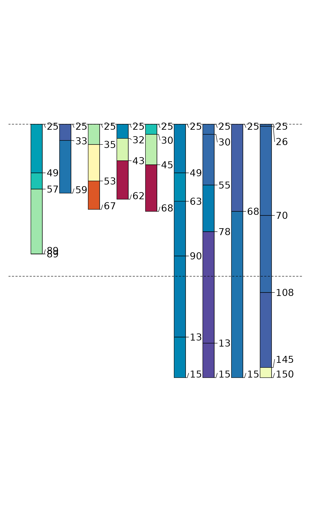
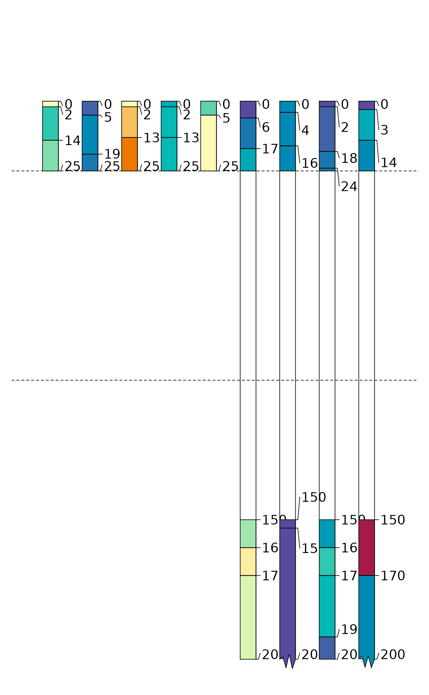
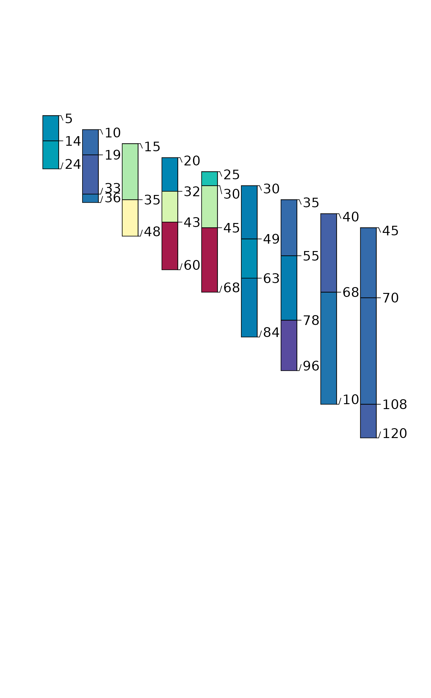
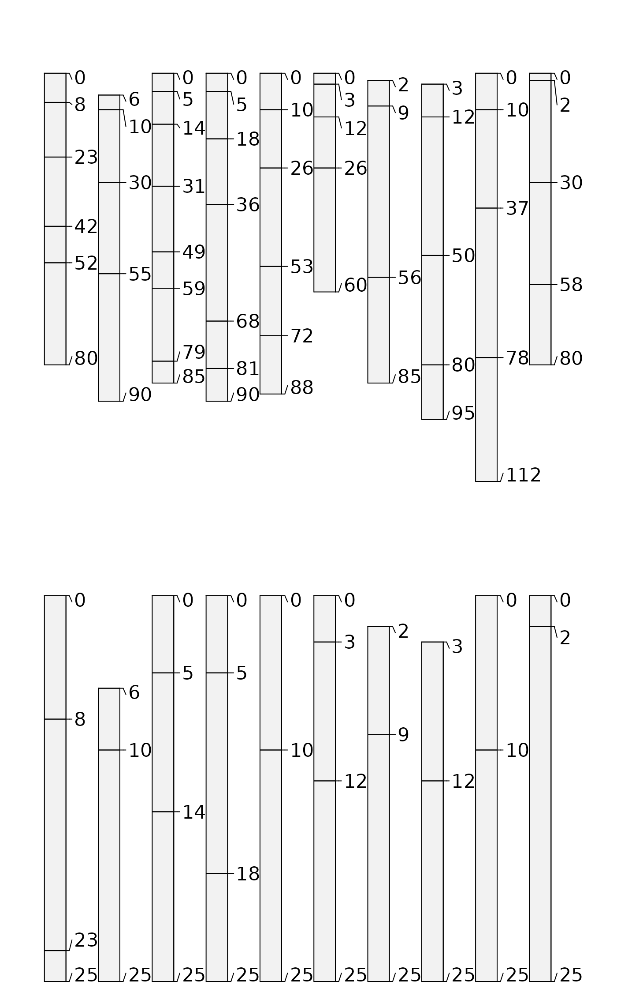
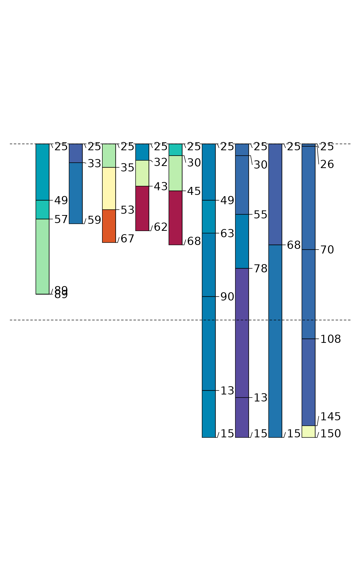
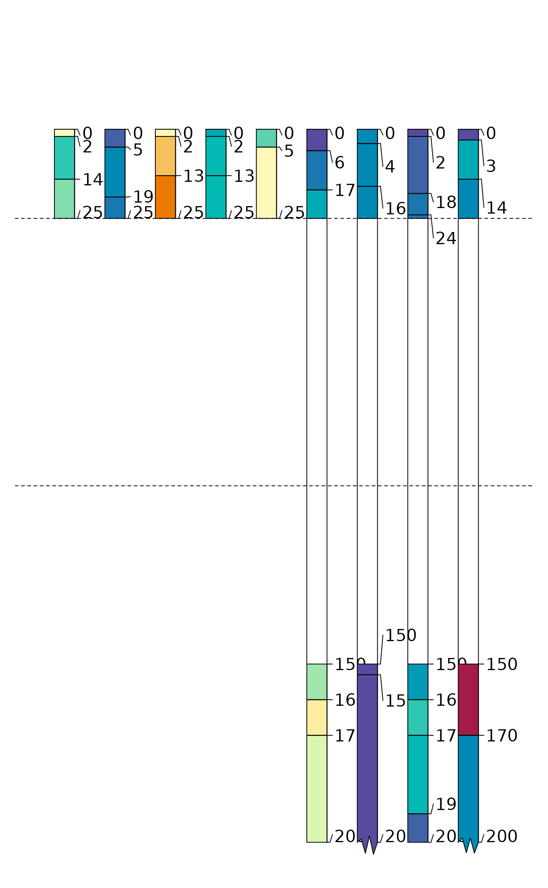
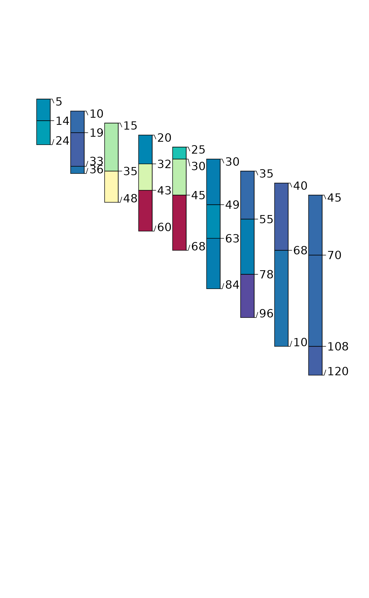
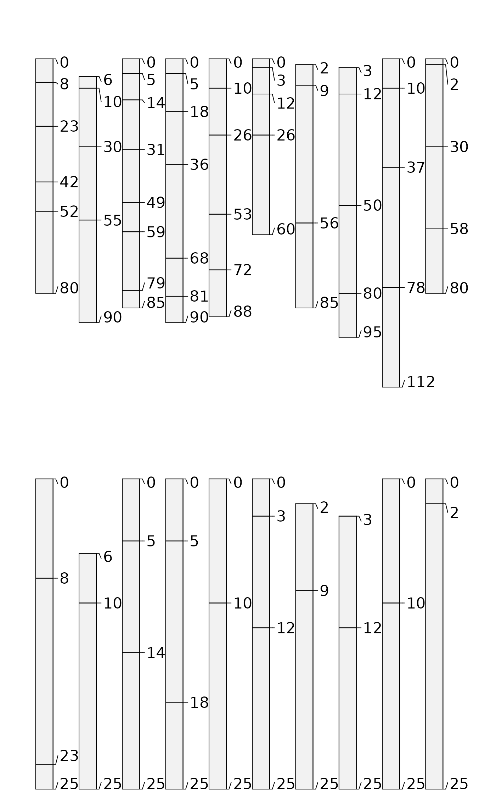

Make a "clod" of horizons from a SoilProfileCollection given a point or a depth interval to intersect. The interval [z1,z2] may be profile-specific (equal in length to p), or may be recycled over all profiles (if boundaries are length 1). For "point" intersection, z2 may be left as the default value NULL.
trunc() is a wrapper method (using S4 generic) for glom() where truncate=TRUE
Usage
# S4 method for class 'SoilProfileCollection'
glom(
p,
z1,
z2 = NULL,
ids = FALSE,
df = FALSE,
truncate = FALSE,
invert = FALSE,
fill = FALSE,
modality = "all",
drop = !fill,
...
)
# S4 method for class 'SoilProfileCollection'
trunc(x, z1, z2, ...)Arguments
- p
A SoilProfileCollection
- z1
numeric vector of top depth to intersect horizon (required). Can be an expression involving
siteNames(p)or quoted column name. Should evaluate to numeric length1or length equal tolength(p)- z2
numeric vector bottom depth of intersection interval (optional). Can also be an expression involving
siteNames(p)or quoted column name. Should evaluate to numeric length1, length equal tolength(p)orNULL. Default:NULLis "point" intersection- ids
return only horizon IDs? default:
FALSE- df
return a data.frame, by intersection with
horizons(p)? default:FALSE- truncate
truncate horizon top and bottom depths to
z1andz2? default:FALSE- invert
get horizons outside the interval
[z1,z2]? default:FALSE- fill
keep sites and preserve order for profiles that do not have horizons in interval by filling with a single horizon with
NAtop and bottom depth. default:FALSE- modality
default:
"all"return all horizons; ormodality = "thickest") to return the thickest horizon in interval. If multiple horizons have equal thickness, the first (shallowest) is returned.- drop
Inverted alias of fill for consistency with other methods. When
drop=FALSE, filling occurs.- ...
trunc(): additional arguments passed toglom()- x
A SoilProfileCollection
Details
"To glom" is "to steal" or to "become stuck or attached to". The word is related to the compound "glomalin", which is a glycoprotein produced by mycorrhizal fungi in soil.
The full depth range of horizons included within the interval are returned (a "ragged" SoilProfileCollection) unless the truncate argument is set as TRUE. Horizon intersection is based on unique ID hzidname(spc) and depth range of interest. Profiles that lack data in the range of interest will be dropped from the resulting SoilProfileCollection.
If inverting results with invert, it is possible that thick horizons (whose boundaries span wider than the specified interval) will be split into two horizons, where previously they were one. This may make the results from ids = TRUE different from what you expect, as they will be based on a profile with an "extra" horizon and re-calculated unique horizon ID (hzidname(spc)) "hzID".
Examples
# keep examples from using more than 2 cores
data.table::setDTthreads(Sys.getenv("OMP_THREAD_LIMIT", unset = 2))
data(sp1, package = 'aqp')
depths(sp1) <- id ~ top + bottom
site(sp1) <- ~ group
p <- glom(sp1, 25, 150)
# 28 horizons
nrow(p)
#> [1] 32
# inspect graphically
par(mar = c(1,1,3,1))
plot(p, color = "prop", max.depth = 200)
#> [P001:4] horizon with top == bottom, cannot fix horizon depth overlap
#> consider using repairMissingHzDepths()
abline(h = c(25, 100), lty = 2)
 ## glom(..., truncate = TRUE)
p2 <- glom(sp1, 25, 150, truncate = TRUE)
# 28 horizons
nrow(p2)
#> [1] 32
# inspect graphically
par(mar = c(1,1,3,1))
plot(p2, color = "prop", max.depth = 200)
#> [P001:4] horizon with top == bottom, cannot fix horizon depth overlap
#> consider using repairMissingHzDepths()
abline(h = c(25, 100), lty = 2)

## glom(..., truncate = TRUE, invert = TRUE)
p3 <- glom(sp1, 25, 150, truncate = TRUE, invert = TRUE)
# 45 horizons
nrow(p3)
#> [1] 40
# inspect graphically
par(mar = c(1,1,3,1))
plot(p3, color = "prop", max.depth = 200)
abline(h = c(25, 100), lty = 2)

## profile-specific interval, using expressions evaluated within sp1@site
# calculate some new site-level variables containing target interval
sp1$glom_top <- (1:9) * 10
sp1$glom_bottom <- 10 + sp1$glom_top
# glom evaluates non-standard expressions using siteNames(sp1) column names
p4 <- glom(sp1, glom_top / 2, glom_bottom * 1.2, truncate = TRUE)
# inspect graphically
par(mar = c(1,1,3,1))
plot(p4, color = "prop", max.depth = 200)

# load sample data
data("sp3")
# promote to SPC
depths(sp3) <- id ~ top + bottom
### TRUNCATE all profiles in sp3 to [0,25]
# set up plot parameters
par(mfrow=c(2,1), mar=c(0,0,0,0))
# full profiles
plot(sp3)
# trunc'd profiles
plot(trunc(sp3, 0, 25))

## glom(..., truncate = TRUE)
p2 <- glom(sp1, 25, 150, truncate = TRUE)
# 28 horizons
nrow(p2)
#> [1] 32
# inspect graphically
par(mar = c(1,1,3,1))
plot(p2, color = "prop", max.depth = 200)
#> [P001:4] horizon with top == bottom, cannot fix horizon depth overlap
#> consider using repairMissingHzDepths()
abline(h = c(25, 100), lty = 2)

## glom(..., truncate = TRUE, invert = TRUE)
p3 <- glom(sp1, 25, 150, truncate = TRUE, invert = TRUE)
# 45 horizons
nrow(p3)
#> [1] 40
# inspect graphically
par(mar = c(1,1,3,1))
plot(p3, color = "prop", max.depth = 200)
abline(h = c(25, 100), lty = 2)

## profile-specific interval, using expressions evaluated within sp1@site
# calculate some new site-level variables containing target interval
sp1$glom_top <- (1:9) * 10
sp1$glom_bottom <- 10 + sp1$glom_top
# glom evaluates non-standard expressions using siteNames(sp1) column names
p4 <- glom(sp1, glom_top / 2, glom_bottom * 1.2, truncate = TRUE)
# inspect graphically
par(mar = c(1,1,3,1))
plot(p4, color = "prop", max.depth = 200)

# load sample data
data("sp3")
# promote to SPC
depths(sp3) <- id ~ top + bottom
### TRUNCATE all profiles in sp3 to [0,25]
# set up plot parameters
par(mfrow=c(2,1), mar=c(0,0,0,0))
# full profiles
plot(sp3)
# trunc'd profiles
plot(trunc(sp3, 0, 25))
